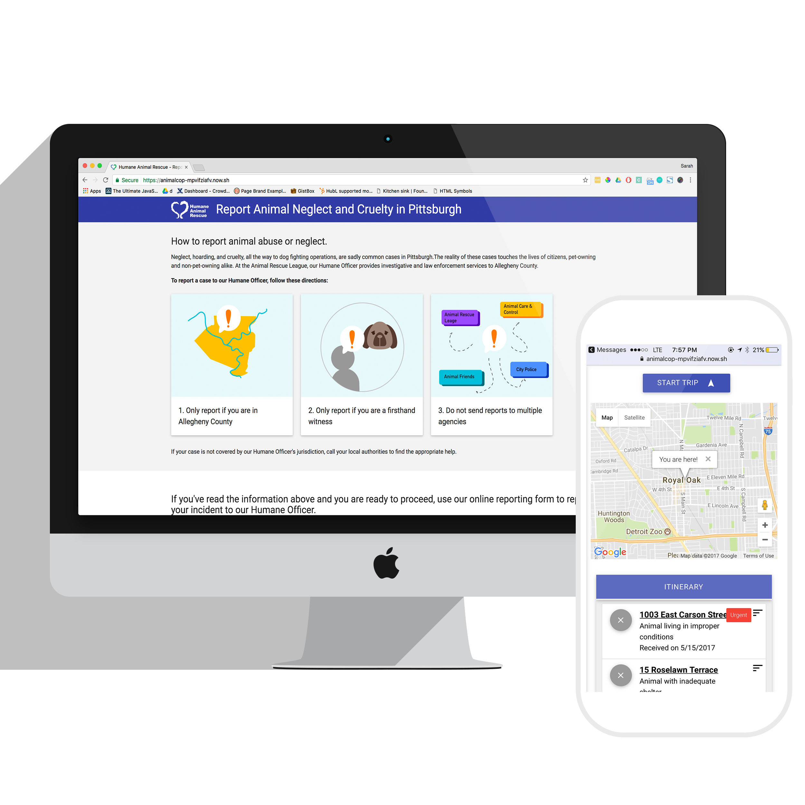

Mindful
How might mobile health data be shared by patients with mental health professionals in improving mental health? The idea that our mental and physical health influence one another really isn’t anything new- but rapid advances in mobile health technology, from smartphone apps to wristbands to headsets, is dramatically changing the landscape of what is possible.
So why is this important? It’s all about transforming mental health treatment from episodic, to a more holistic approach. Young people are at particularly high risk for mental health issues, with nearly 27 percent of young, college aged people ages 18- 24 suffering some level of diagnosable mental health issue, yet professional mental health services tend to be only used in cases of severe crisis.
While times are changes, young people frequently cite not seeking mental health services due to the continuing stigma of mental health and their own perceived lack of availability to attend mental health services. The use of mobile devices to track personal health data, including mental health indicators, is increasingly prevalent, particularly among this age group. Students are also often interested in learning more about their mental and physical health but often lack the expertise in interpretation and reflection.
However, most practicing mental health clinicians have limited experience or ability to help their patients best use apps as support outside the office. As therapy sessions are focused on collaborative working together between therapist and student, clinicians want to encourage positive behavior in and out of sessions.
Ongoing Project, Jan 2017- Jan 2018
I started this project in a Mobile Health Design Course taught by Jason Hong, and continued to expand on it with my mother, a clinical pyschologist specializing in biofeedback treatments.